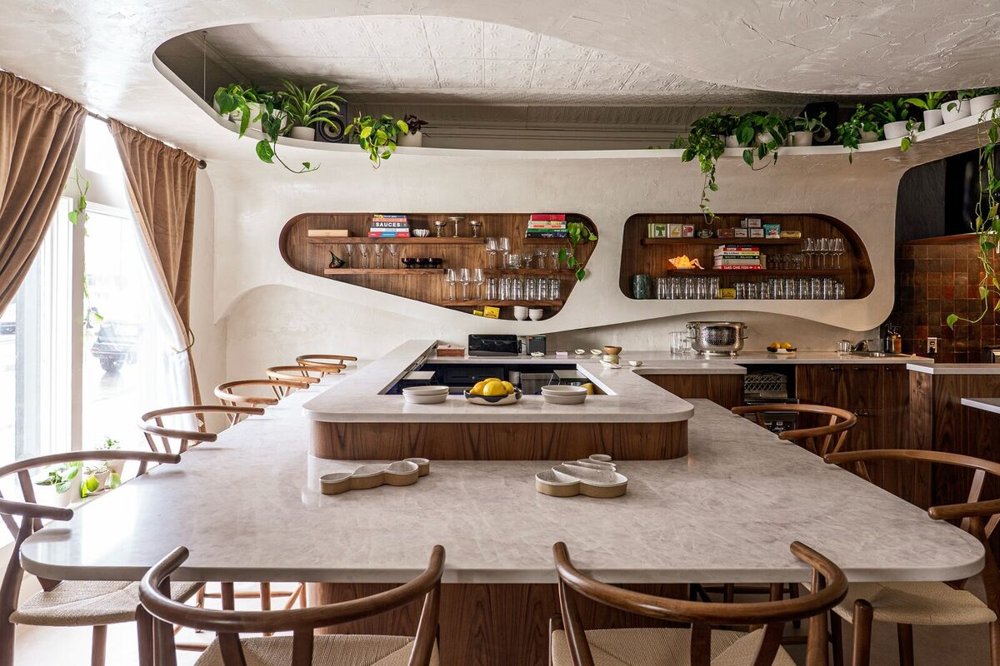

One day of dumplings at Umbo, folded by hand and steamed to order.
Noon to 4pm. Walk-ins only, first come, first served.
See the Menu →
Fine seafood, unfussy — served the way we’d want it ourselves.

Plaster walls, curved wood, and a wink of old-postcard glamour. A small room built for long dinners — a raw bar, a few bottles, and the kind of night that stretches.
Umbo is a 25-seat oyster bar at 430 E. Front Street in downtown Traverse City, from Cameron Rolka and Sarah Welch, the team behind Marrow and Mink in Detroit. Oysters, tinned fish, and caviar, with an all-Michigan natural wine list plus Michigan beer and cider. Dinner Thursday through Monday, 4:30 to 9:30pm. Book a seat on Resy, or walk on in.

Oysters on ice and tinned fish are always on, caviar comes by the gram, and the rest of the menu turns with the season and the market.